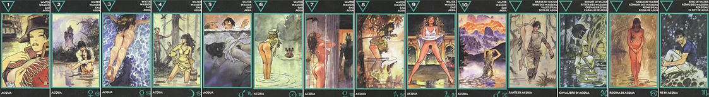

ТУЗ ВОДЫ
Главное значение Туза Воды – это счастье в любви. Поэтому в "Эротическом Таро Манары" на карте изображена женщина в кителе и адмиральской треуголке. Рядом с ней качающийся на волнах, готовый к отплытию корабль. Она – очаровательный капитан этого корабля. Она приглашает нас в плаванье. И плаванье обещает быть очень приятным. Поэтому Туз Воды, помимо увеселительных поездок, означает также сексуальность или чувственность, символизирует полное погружение человека в такие сферы, искреннюю заинтересованность в них.
Мечтательность, ожидание любви, готовность влюбиться. Эмоциональная отзывчивость, нежность, сентиментальность, открытость навстречу эмоциям. Непосредственность, чувствительность, желание новых впечатлений, приключений, романтики. Подвластность чувствам и грезам, погруженность в них. Внимание обращается только на чувства. Неопытность. В отношениях - шанс возникновения нового знакомств, связей, зарождение отношений очень романтичных, чарующих, где много ухаживаний, чувств, как это бывает у совсем юных во время первой влюбленности. Но есть опасность иллюзий, по неопытности. Если отношения уже имеются, то для одного из партнеров очень важны романтические знаки внимания и запахи. В позиции будущего - действий от партнера ожидать не приходится. Скорее, он будет выжидать, пускаясь в мечты, которые могут ни к чему и не привести. Но это шанс на возникновение отношений, который нужно правильно использовать и не пропустить.
2 ВОДЫ
Привлекательность, интуиция, желание творить или стремление к переменам присутствуют в значении двойки Воды. В колоде "Эротического Таро Манары" на карте двойки изображена тёмноволосая девушка, стоящая по пояс в реке, в мокрой одежде. Её бережно прижимает к себе молодой человек. Он пытается удержать её от опрометчивого поступка – броситься в воду. За ним виден освещенный Луной замок. Старинный замок выражает укрытие, дом, который они покинули, чтобы испытать опасности мира. Луна придаёт их отношениям романтизм, счастье момента. Любовную идиллию, юношескую влюблённость пытается донести до нас изображение двойки Кубков.
Очень много чувств, эмоций, но истерических, нездоровых. В отношениях, однозначно, есть глубина чувств, однако нет гармонии и взаимопонимания. Один из партнеров явно провоцирует другого доказать свою любовь, не доверяет ему, не понимает. Ему не хватает ощущения, что тот его любит, поэтому провокацией он пытается эти доказательства получить. А другой отчаянно его удерживает, контролирует, навязывает свое понимание отношений, боится потерять. Очень много эмоций, которые ослепляют разум. Нет никакой логики, нет мудрости и опыта выстраивать отношения гармонично и спокойно. Поведение строится только на эмоциях, спонтанно. Требуется обновление чувств. Партнерам придется долго учиться любви, иначе конфликт чувств будет продолжаться.
3 ВОДЫ
Карта тройки Воды символизирует человека глубоко эмоционального, общительного, имеющего "трезвую голову" и сильные чувства. В "Эротическом Таро Манары" эти чувства подчёркиваются обилием голубой прозрачной воды. Под водой раскованно и свободно, как рыба плавает женщина. Её образ показывает не только умение "плавать", но и способность свободного выражения чувств, открытость.
Искусство Любить по-настоящему. Блаженство, полнота чувств, открытость сердца. Умение любить и при этом оставаться самодостаточным, даже если партнера нет рядом. Внутренняя свобода, наслаждение своими чувствами, счастье лишь оттого, что любишь и принимаешь кого-то таким, как он есть, и ничего не требуя взамен, не нуждаясь ни в чем. Упоение любовью. Гармония, свет, спокойствие, чистота, отсутствие внутренних барьеров, раскрепощенность, естественность. В отношениях - изобилие любви, взаимопонимание, и при этом партнеры не "залипают" в чувствах. Но это может быть и ситуация, когда речь идет о блаженном переживании чувства любви в одиночестве, когда партнера нет рядом.
4 ВОДЫ
На четвёрке Кубков в "Эротическом Таро Манары" изображена молодая брюнетка, стоящая с ведром по колено в реке. Подбоченясь, с вызовом, она смотрит на двух охотников. Но те не подходят к ней. Отказ от активной позиции, робость, стеснительность или боязнь собственных чувств выражает в личностном плане четвёрка Воды. Таким образом, карта говорит, что из-за человеческого фактора может не состояться какая-то запланированная встреча, продвижение в делах или карьере, а в любви, например, появится разочарование.
Охрана своей территории. Защитная, оборонительная позиция. Настороженность, недоверие, защита своего сердца от ненужных сейчас чувств. Опасение за свои чувства и личную жизнь. Отношения по этой карте достаточно стабильные, устойчивые. Но партнеры держатся друг от друга на определенной дистанции. Внутренние барьеры и страхи, комплексы и опасения мешают взаимоотношениям. Нет определенного представления - чего от партнера ожидать. Нет уверенности, что все будет хорошо, поэтому существует желание сохранить стабильность в том варианте, как она есть.
5 ВОДЫ
Конфликты между чувствительностью и рассудочностью выражены в этой карте. Чувства подталкивают что-то изменить в жизни, преодолеть застой, а рассудок высказывает опасения, боязнь всё потерять. Подобные опасения в "Эротическом Таро Манары" приобрели угрожающий облик молодого брюнета. Он в мутной воде пытается утопить совсем безразличную к своей участи девушку. Пятёрка Воды символизирует негативные фантазии человека, страх перемен, затворничество, желание исключить из жизни все возможные неприятности.
Накал страстей, психологическая игра, борьба с помощью чувств. Ревность (как правило, безосновательная). Испытание чувств партнера "на прочность", где в ход идут любые методы, вплоть до игры на инстинктах. Это очень болезненные отношения двух близких людей, где часты острые конфликты. Чувства переходят в агрессию, злобу, желание уничтожить партнера. Скандал, эмоциональный срыв. Очень интенсивные отношения, в которых много опасных ситуаций, что грозит разрывом. Часто в таких парах примирение происходит через секс. Скандалы чередуются с громкими примирениями и уверениями в любви.
6 ВОДЫ
В личном плане карта шестёрки Кубков говорит об ожидании. Стройная девушка в "Эротическом Таро Манары" стоит по щиколотку в воде, ожидая, когда, наконец, к ней подплывёт её "ласковый и нежный зверь". Хотя девушка полуобнажена, шестёрка Воды выражает не только умение ждать, но и интеллигентность, спокойствие персонажа. Карта советует гадающему развить в себе такие качества личности.
Администратор запретил публиковать записи.
Взаимный интерес, заигрывание, любопытство. Люди присматриваются друг к другу, пытаясь оценить, что каждый из них собой представляет, стоит ли идти на сближение, чего можно ожидать от партнера и от отношений в целом. Особенно если речь идет о новом знакомстве. Если же это уже сложившаяся пара, то карта говорит о неком этапе в отношениях, когда партнеры узнают новые качества друг в друге, несмотря на то, что знакомы давно. Карта показывает большой сексуальный и чувственный потенциал в данных отношениях, возбуждение от новизны, от неизведанного. Люди доброжелательно относятся друг к другу, несмотря на то, что до конца еще не ясно, несет ли связь какую-то опасность. В позиции будущего может указывать на возникновение приятного нового события в личной жизни.
7 ВОДЫ
Фантазии, желание неизведанного и, одновременно, опасения этого присутствуют в семёрке Кубков. Так в колоде "Эротического Таро Манары" на рисунке семёрки Воды можно заметить, как женщина наслаждается под струями душа, а на заднем плане виден водный монстр, который неумолимо приближается к ней. Он – фантазия, эротическая прихоть, таящая в себе неизведанные опасности. Хотя данное значение обычно не исключает, что в реальности жизни героиня тоже "играет с огнём".
Противоположности - "красавица и чудовище". С одной стороны, - что-то светлое и чистое, с другой - темное и опасное. Смутные предчувствия надвигающейся опасности, пугающей неизвестности. Отношения диаметрально противоположных партнеров, которые компенсируют недостающие качества друг друга. Но впадают в крайности - если кто-то видит себя очень "белым и пушистым", то тут же начинает воспринимать партнера как "зло" и находить в нем множество пороков. Здесь нет комфорта, есть страх опасности, напряжение, ожидание чего-то неприятного. Кстати, по этой карте может быть показано и венерическое заболевание, а также внутренние проблемы, связанные с переживаниями относительно своей внешности, комплексы. Страх несоответствия партнеру, или, наоборот, - чувство, что партнер до вас не дотягивает и сильно.
8 ВОДЫ
Интересы на стороне. Девушка на изображении этой карты стоит по колено в воде, символизирующей яркую сексуальность, ее чувства. Чтобы случайно не замочить, она подобрала подол своего платья. Рядом, в дерево вонзилась стрела. Оперенная стрела - предупреждение, напоминание или сообщение о том, что в другом месте ее помнят и ждут. Пока что она нужна. Стороннее увлечение - ошибка. Но скоро будет поздно вернуться назад.
Внимание, интерес, приглядывание. Предчувствие перемен. Ожидание активности от партнера. В отношениях кто-то нежданно-негаданно вдруг начинает проявлять знаки внимания, чем может вызвать не только ответный интерес, но и настороженность - "С чего бы это?" Внимание застает врасплох, вызывает недоумение. Если же отношения существуют уже давно, то карта может указывать на ревность, или еще какую-либо причину, вызывающую пристальное внимание и наблюдение. В отношениях есть некоторая тревожность, недоверие, страхи, которые способны помешать верить в их благоприятное развитие. Например, страх несоответствия партнеру, или его - вам. Однако, это шанс. И, возможно, не стоит его упускать из-за страхов? Совет - приглядывайтесь к знакам, знамениям, в них может быть подсказка - что следует делать.
9 ВОДЫ
Красивые здания, дорогие машины, сияющий ночными огнями город. Это - символы благосостояния, которыми обладает счастливая женщина. Подобно ребенку, наивно приветствующему прохожего, она подняла подол своего платья до пояса. Этот щедрый жест символизирует ее открытость. Она чувствует себя звездой, слегка опьяненная ночным воздухом, она готова подарить свою красоту просто зрителю. И разве важно - кто она, модель или обычнная подгулявшая девчонка, устроившая, вдруг, стриптиз в кабаке? Хотя при гадании на мужчину 8 воды может говорить об эксгибиционизме.
Облегчение, абсолютная открытость, освобождение от ненужного, уже отжившего себя груза прошлого, который тяготил. Свобода, отсутствие комплексов. Полная уверенность в своей правоте. Удовлетворение, благополучие, непосредственность. Эйфория от того, что можно делать все, что хочется. Нет никаких барьеров и рамок, ограничений и препятствий. Прежде всего потому, что существует внутренняя свобода и уверенность в правильности, даже если это противоречит общественным нормам. В отношениях - вседозволенность, абсолютная свобода. Связь без всяких обязательств и ограничений. Партнеры могут даже жить в разных домах, или в гражданском браке. В любом случае - они ничего друг другу не должны и их союз держится только на искренних чувствах и взаимном желании быть вместе. Однако, стоит иметь в виду, что полное отсутствие рамок - это крайность, и она может привести в итоге к непредсказуемым последствиям.
10 ВОДЫ
Взаимодополнение разнородных вещей, стихий представлено в десятке Воды. В "Эротическом Таро Манары" это выражено в гармонии сил природы. На рисунке напоминающая русалку женщина стоит в воде. Сам водоём окружён деревьями, сверкающими пиками гор. Лёд и пламенеющие лучи заката сошлись на этих пиках вместе, образуя гармонию. Так десятка Кубков говорит о чистоте, верности, счастье, дарованных нам природой.
Карта перехода от внутренних поисков себя к реализации желаний. Потребность в развитии, желание нового.
Торжество чувств, гармония, счастье, успех в личной жизни. Совершенство ситуации. Верность. Чувства интенсивные, насыщенные, глубокие. Сюда подходит выражение "Купаться в любви". Но, вместе с тем, впереди открываются новые горизонты в отношениях и хочется попробовать их изведать. В паре - все замечательно и есть прекрасные перспективы. Взаимоотношения не стоят на месте, наступает новый этап, готовность к активным действиям для достижения еще больших высот. Карта может указывать также и на оживление старых отношений, новый виток. Переход из одной стадии - в другую. Совершенствование.
СЛУГА ВОДЫ
Юмор, интеллект и надёжность характеризуют Вестника Кубков. В "Эротическом Таро Манары" Слуга Воды изображён в виде доброго молодца, спасающего девицу из ужасного плена. Современный камуфляж на нём, как аналог доспехов, символизирует его благородство, честь. А плен следует понимать фигурально – это одиночество, скука и женские "недомогания". Именно поэтому Вестник Кубков даже в стандартном описании колоды истолковывается как очаровательный принц, попутчик, потенциальный любовник.
Взаимопомощь, дружеское участие. Верность и преданность в дружбе, сострадание, добросердечность, мягкость, скромность. Услужливость, готовность к самопожертвованию. Отношения хорошие, но это больше дружба, чем любовь, хотя она не без оттенка влюбленности. Доверительные, близкие отношения, - можно в любую минуту обратиться за помощью, хоть среди ночи, и получить ее. Несколько инфантильные, детские, но эмоциональные. Карта также укажет на примирение, жест дружбы или шанс влюбиться. Из событий - вероятны хорошие новости, семейные радости, подарки, небольшое, но не очень надежное предложение.
ВСАДНИЦА ВОДЫ
Всадница Воды оставила коня на берегу и по грудь вошла в болото – оно-то и символизирует застой. Но Всадница не замечает затхлости окружающих вод. И нужен кто-то, кто укажет ей разницу между стоячей и чистой водой. Так карта может говорить, что отношения не переходят на новый уровень развития и что нужно проявить инициативу, иначе они исчерпают себя вовсе.
Эмоциональная трясина, болото, из которого сложно выбраться (даже и не хочется выбираться). Мечтательность, чувствительность, но неадекватно сильные чувства, которые полностью управляют человеком. Любовная и сексуальная зависимость от партнера. Отношения затягивающие, глубокие, завораживающие, зачаровывающие, гипнотические, полные переживаний. Слишком много романтики. Ничего, кроме партнера, не интересует. Может быть неразделенная любовь, безнадежность. А если чувства и взаимны, то такие отношения не светлые, а, напротив, тормозят развитие личности, зацикливают на партнере и на своих чувствах. И чем дальше - тем больше. Из приближающихся событий вероятна встреча с любвеобильной персоной, и даже предложение руки и сердца. Однако, отношения не здоровые, - в них влечет, но нет надежности. В позиции будущего - долговечность отношений находится под вопросом, несмотря на зависимость. Партнер может оказаться ненадежным, эмоционально незрелым.
КОРОЛЕВА ВОДЫ
В "Эротическом Таро Манары" на карте Королевы Воды изображена женщина, одежду которой составляют лишь бусы. Она скромно стоит под проливным дождём, ожидая возлюбленного. И дождь не доставляет ей неудобств, наоборот, символизирует её чувственность, - она находится в слиянии с его стихией. Она знает, что пока она такая, она будет вне конкуренции, что милый никуда не денется, что придёт. Таким образом карта Королевы Кубков сообщает о женщине, которая всегда любима, которая ждёт.
Если это образ женщины, то очень эмоциональной, чувствительной, ранимой, ласковой, заботливой, доброй, преданной, душевной, с богатым внутренним миром, отзывчивой, интуитивной, любящей. Она посочувствует, поймет, поможет. Из ее недостатков можно выделить капризность, быструю смену настроений, мнительность, обилие страхов, обидчивость, погружение в мир фантазий, пассивность. Она может быть домохозяйкой, воспитательницей, или заниматься работой, связанной с питанием, жизнеобеспечением. Также может быть деятелем искусств, творческой личностью, или психологом, эзотериком, целительницей. Если речь - не о человеке, то карта символизирует любовь, чуткость, верность, очищение, грусть, созерцательность, погруженность в себя. На событийном уровне карта предсказывает любовь, привязанность, хорошие события в доме, семье, материнство, беременность, утешение, безопасность, комфорт. В личной сфере - хорошие, преданные, глубокие отношения, полные заботы и любви, материнской заботы и участия, однако, любовь может переживаться и каждым в одиночку, глубоко в себе.
КОРОЛЬ ВОДЫ
Он очень сексуален, а потому может подарить своей подруге незабываемые минуты наслаждения. Но, только минуты... На карте изображён мужчина, сидящий на дне морском. Конечно, это оригинально, а потому Король Воды может говорить о приглашении в гости к какому-то интересному лицу – поэту, художнику, творческому безработному. Но, верно говорят, "не доверяй поэту, дева, его своим ты не зови, и пуще божеского гнева боись поэтовой любви".
Если это образ мужчины, то речь идет о ловком соблазнителе. Он эмоционален, чувствителен, прекрасно разбирается в психологии, тонко воспринимает настроения и мотивы людей, умело манипулирует их чувствами. Способен заманить женщин в свои сети легко и непринужденно, но так же легко и бросить их. Романтичен, нежен, всегда умеет успокоить, утешить, поддержать и посочувствовать. Любит дом. Кроме того что это может быть типичный донжуан, он слаб, пассивен, лицемерен, инфантилен, обидчив, имеет много страхов и комплексов. Не исключено у него и наличие пристрастия к алкоголю или наркомании. Род возможных его занятий - соблазнитель, психолог, человек искусства, оккультист, мистик, экстрасенс, или же безработный, лентяй. Карта может говорить о близкой встрече, вероятности появления в жизни женщины такого мужчины. Не стоит терять бдительность, а прислушиваться к своей интуиции, быть гибким, с творческим подходом ко всему. Отношения по карте могут быть двоякими - с одной стороны - эмоциональными, глубокими, полными чувства гармонии, заботы и понимания; но, при окружении негативными картами, - обманчивыми, - соблазнитель ловко играет чувствами женщин, самоутверждается или имеет исключительно постельный интерес.